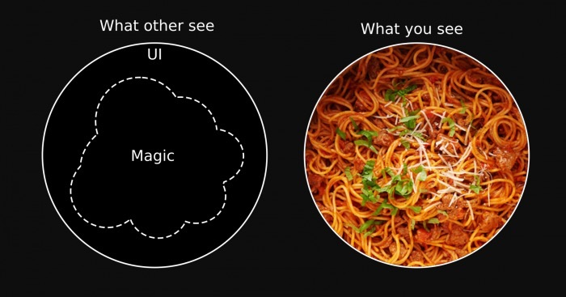
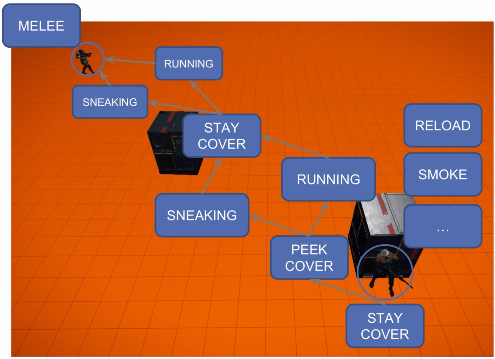
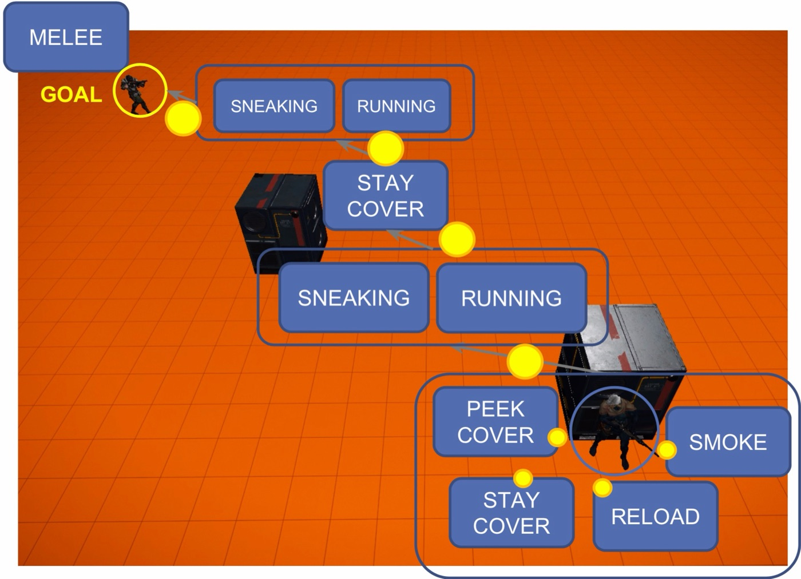
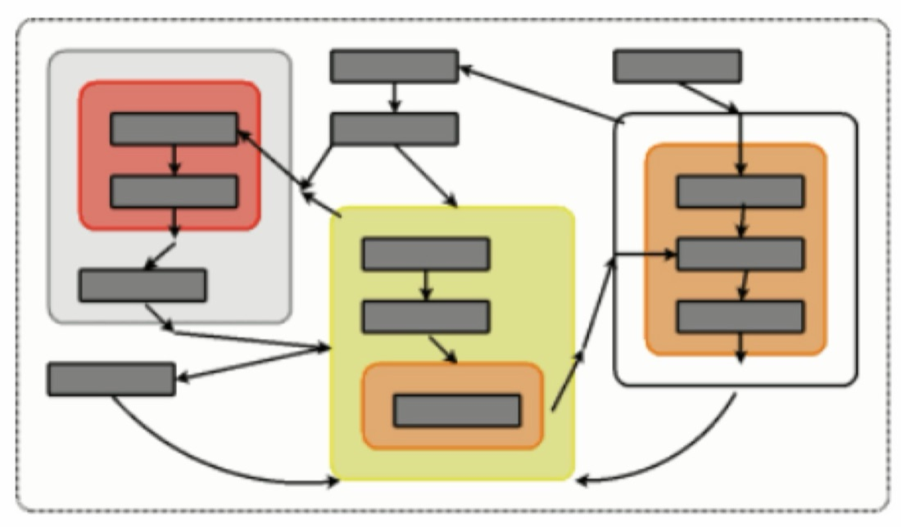
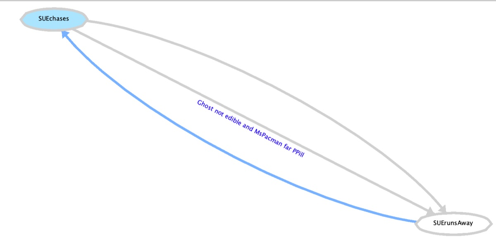

En la Práctica 1 el comportamiento vive dentro de
getMove: una cadena de if que se recorre entera en cada turno. Funciona, y en
la Práctica 2 lo vais a reescribir. No porque la cadena esté mal, sino porque mezcla dos cosas que
conviene tener separadas: lo que sabéis del juego —cuándo huir, cuándo cazar— y
el mecanismo que decide cuál de esas cosas toca ahora. Una máquina de estados pone lo
primero en clases pequeñas con nombre y deja lo segundo al motor.
Por qué los if anidados no escalan
Este es un controlador de fantasmas escrito a la manera «algorítmica»: para cada fantasma que tiene que decidir, huye si es comestible o si Ms. Pac-Man está cerca de una píldora de poder; si no, la persigue casi siempre, y de vez en cuando se mueve al azar para no ser previsible.
iffunction getMove(game) for each f in FANTASMAS do if necesitaDecidir(f) then if esComestible(f) OR pacManCercaDePíldoraDePoder() then mov[f] ← alejarse de Ms. Pac-Man else if azar() < CONSISTENCIA then mov[f] ← acercarse a Ms. Pac-Man else mov[f] ← un movimiento legal cualquiera // para no ser previsible end if end if end for return mov end function
Con tres ramas se lee de un vistazo. El problema llega con la décima. Cada comportamiento nuevo —cortar el paso en un cruce, proteger una píldora, esperar a que los otros cierren la pinza— es otra rama, y cada rama necesita saber en qué situación se activa y en qué situación deja de hacerlo. Como el árbol se recorre desde arriba en cada turno, esa segunda parte no se escribe en ningún sitio: sale sola del orden de las ramas y de las condiciones de todas las que van delante. Para saber por qué un fantasma hizo algo hay que recorrer el árbol entero con el estado del juego en la cabeza.

Desde fuera, el fantasma parece listo; desde dentro, es un plato de espaguetis. La salida no es
escribir mejor los if, es cambiar la unidad con la que se piensa: en vez de «qué hago en
esta situación», «en qué modo estoy, y qué me haría cambiar de modo».
Estados, transiciones y un turno
Una máquina de estados finita (finite state machine, FSM) tiene cuatro piezas:
- Un conjunto finito de estados. Cada uno es un comportamiento completo: «perseguir», «huir». Mientras se está en él, se hace lo mismo.
- Un conjunto de transiciones, cada una con un estado de origen, uno de destino y una condición (la guarda) que dice cuándo se cruza.
- Un estado inicial.
- Un estado actual, que es la única memoria de la máquina.
Y un único paso de ejecución, que en un juego es el turno: mirar las transiciones que salen del estado actual; si alguna se cumple, cambiar al destino; y hacer lo que diga el estado en el que se ha quedado. Los fantasmas de arriba, con esas piezas, son dos estados y dos flechas.
Hay dos cosas que conviene no confundir. Un grafo de estados
es una representación: los modos en los que puede estar el agente y cómo se pasa de uno a otro. Una
máquina de estados es una implementación de ese grafo: el código que, turno a turno,
elige el siguiente estado según las transiciones. Toda IA tiene estados y un grafo de estados, aunque
nadie lo dibuje; el controlador de if de arriba también los tiene, sólo que escondidos
en las condiciones. No toda IA está implementada como FSM. Pero pensar el comportamiento como
estados es tan natural que los diseñadores de juegos dibujan máquinas de estados para explicar cómo
tiene que comportarse un personaje aunque luego nadie las programe así.
El fantasma completo tiene cuatro estados: además de perseguir y huir, moverse al azar después de que muera Ms. Pac-Man, y esperar en el centro después de que se lo coman.
Fijaos en lo que ha pasado con la pregunta «¿por qué hace esto?». Ahora tiene dos respuestas
separadas, y las dos están escritas: está huyendo porque es el estado actual, y ha
empezado a huir porque se cumplió la guarda de esa flecha. Y fijaos también en que las dos flechas
entre Perseguir y Huir no tienen por qué ser la misma condición negada: se entra en Huir por una cosa
y se sale por otra. Eso, en la cadena de if, no se puede escribir.
Qué se ejecuta, y cuándo
Hay dos sitios donde se puede colgar el comportamiento. En una máquina de Moore la
acción pertenece al estado: mientras estás en Huir, huyes. En una de Mealy pertenece a
la transición: lo que haces depende de la flecha que acabas de cruzar. El motor de la asignatura es de
Moore: cada estado lleva su acción y las transiciones sólo deciden. A eso se añaden dos ganchos
habituales, la acción de entrada, que se ejecuta una vez al llegar a un estado
(arrancar un temporizador, elegir un objetivo), y la de salida, que se ejecuta una vez
al irse (limpiar lo que el estado dejó a medias). El motor sólo trae la segunda, stop();
en la sección 10 está cómo añadir la primera.
Tres formas de programarla
El diagrama es la parte fácil. Hay tres formas habituales de llevarlo a código, de peor a mejor, y cada una arregla un problema de la anterior.
1 · La mala: if para cambiar, switch para actuar
// primero, una cadena de if para cambiar de estado: cada uno repite // de qué estado sale, y el primero que se cumple gana if estado = PERSEGUIR AND msPacManMuere() then estado ← MOVIMIENTO_ALEATORIO else if estado = MOVIMIENTO_ALEATORIO AND msPacManReaparece() then estado ← PERSEGUIR else if estado = PERSEGUIR AND (comestible() OR msPacManCercaPPill()) then estado ← HUIR else if estado = HUIR AND meHanComido() then estado ← EN_EL_CENTRO else if estado = HUIR AND NOT comestible() AND NOT msPacManCercaPPill() then estado ← PERSEGUIR else if estado = EN_EL_CENTRO AND finPenalización() then estado ← PERSEGUIR end if // y después, un switch sobre el estado para saber qué hacer switch estado case MOVIMIENTO_ALEATORIO: MovimientoAleatorio() case PERSEGUIR: Perseguir() case HUIR: Huir() case EN_EL_CENTRO: EsperarASalir() end switch
Funciona, y es la máquina del diagrama: seis if, uno por flecha. Pero el grafo está
desperdigado. Para saber qué puede pasar estando en Huir hay que leer la cadena entera y quedarse con
los if que empiezan por estado = HUIR; la prioridad entre flechas es el orden
en que alguien las escribió, y si «me han comido» fuese después de «ya no soy comestible», el fantasma
comido, que ya no es comestible, podría salir hacia Perseguir en vez de volver al centro. Y añadir
un estado obliga a tocar el switch y a repasar cada if por si también tiene
que salir de él. Es la cadena de antes con otra forma.
2 · La sencilla: una tabla
El ejemplo de Rosetta Code para
máquinas de estados es una máquina expendedora hecha con un enum: cada estado sabe a qué
estado lleva cada entrada. Traducido a nuestro fantasma de cuatro estados queda así:
package ejemplos;
/** La máquina de la figura, como tabla: estado × evento → estado. */
public enum EstadoFantasma {
ALEATORIO, PERSEGUIR, HUIR, EN_EL_CENTRO;
// Un EnumMap es un Map cuyas claves son las constantes de un enum, guardado
// como un array con una casilla por constante: get(HUIR) es leer array[2].
// Por eso no vale new EnumMap<>(): los genéricos se borran al compilar, y
// en ejecución el mapa no sabría de qué enum son las claves ni cuántas hay
// para crear el array. EstadoFantasma.class se lo dice.
private static final Map<EstadoFantasma, Map<String, EstadoFantasma>> TABLA =
new EnumMap<>(EstadoFantasma.class);
// Un bloque static es código que Java ejecuta una sola vez, al cargar la clase y
// antes de que nadie la use: aquí sirve para rellenar TABLA, que no cabe en una línea.
static {
for (EstadoFantasma e : values())
TABLA.put(e, new HashMap<>());
TABLA.get(ALEATORIO).put("MsPacMan reaparece", PERSEGUIR);
TABLA.get(PERSEGUIR).put("MsPacMan muere", ALEATORIO);
TABLA.get(PERSEGUIR).put("comestible", HUIR);
TABLA.get(PERSEGUIR).put("MsPacMan cerca PPill", HUIR);
TABLA.get(HUIR).put("no comestible", PERSEGUIR);
TABLA.get(HUIR).put("comido", EN_EL_CENTRO);
TABLA.get(EN_EL_CENTRO).put("penalización terminada", PERSEGUIR);
}
public EstadoFantasma siguiente(String evento) {
return TABLA.get(this).getOrDefault(evento, this); // evento que no me afecta: me quedo
}
public static void main(String[] args) {
EstadoFantasma e = ALEATORIO;
for (String ev : new String[]{"MsPacMan reaparece", "comido", "comestible", "comido", "penalización terminada"}) {
e = e.siguiente(ev);
System.out.println(ev + " -> " + e);
}
}
}MsPacMan reaparece -> PERSEGUIR
comido -> PERSEGUIR
comestible -> HUIR
comido -> EN_EL_CENTRO
penalización terminada -> PERSEGUIR
Ahora el grafo está en un sitio, y se lee como el dibujo. Fijaos en la segunda línea de la salida: un
evento que no sale del estado actual —«comido» mientras persigue— no hace nada, y eso no hay que
programarlo. Pero esta máquina funciona con eventos: alguien tiene que decirle
«comido». Los juegos están llenos de eventos (colisiones, daño, disparadores, fin de animación), pero
el controlador de Ms. Pac-Man no recibe ninguno: en cada turno le llega el Game y
tiene que consultarlo. Lo más parecido son preguntas como
wasPacManEaten(), que valen true durante un turno. Y hay condiciones que no
son eventos en ningún juego: «Ms. Pac-Man está cerca de la PPill» no ocurre en un instante, es
algo que se cumple o no cada vez que se mira. Y la tabla no sabe qué hacer en cada estado: eso sigue siendo
un switch en otra parte.
3 · Con objetos: estados, guardas y acciones como clases
La tercera versión convierte cada pieza en un objeto. Una interfaz
FSM con getState() y doIt(Input in) —«haz lo que toque y pasa al
siguiente estado según la entrada»— y una interfaz StateEngine para construirla:
interface StateEngine
add(viejo, entrada, guarda, acción, nuevo) // varias con el mismo origen y entrada: la primera guarda que se cumpla
add(viejo, entrada, acción, nuevo) // guarda que siempre se cumple
setDefault(viejo, nuevo) // qué pasa si no se cumple ninguna
done() // ya no se añaden más
makeFSM(estadoInicial) // sólo después de done()
Es la idea buena: el grafo se declara con llamadas a add, la condición es un
objeto (la guarda), y la máquina se encarga de recorrerlo. El motor de la asignatura hace exactamente
esto con dos simplificaciones que le vienen bien a un juego: no hay entrada-evento, porque la guarda
consulta el estado del juego directamente, y la acción no va en la transición sino en el estado.
if + switch |
Tabla | Objetos (el motor) | |
|---|---|---|---|
| Dónde está el grafo | Repartido entre los if. |
En una tabla, en un sitio. | En las llamadas a add, en un sitio. |
| Qué dispara un cambio | Un if cualquiera, en cualquier orden. |
Un evento que alguien envía. | Una condición que se consulta cada turno. |
| Qué se hace en cada estado | Un case del switch. |
Fuera de la máquina. | La acción del estado. |
| Añadir un estado cuesta | Tocar el switch y varios if. |
Una fila. | Una clase de acción y unas cuantas llamadas a add. |
De la lista de prioridades a la máquina
En Estrategias algorítmicas la decisión se escribía como una lista de prioridades: comprueba esto; si se cumple, haz aquello; si no, sigue bajando. Es lo que vais a entregar en la Práctica 1. Pasarla a máquina de estados es casi mecánico: cada «haz aquello» es un estado, y cada condición que lleva a él es una transición.
function decidir(f) if encerrado(f) then return NEUTRAL if comestible(f) OR distanciaPacManAPíldora() < 30 then return huir(f) return perseguir(f) end function
Tres líneas, tres estados: Encerrado, Huir y Perseguir. Las condiciones se convierten en las flechas de la sección 11, y el orden de la lista se convierte en el orden en que se añaden las transiciones. Hasta aquí las dos versiones hacen lo mismo. La diferencia está en lo que la lista no puede hacer: la lista no tiene memoria. Cada turno decide desde cero, así que la condición para dejar de huir es, por fuerza, la contraria de la condición para empezar: «a 30 o más de la píldora». La máquina sí recuerda en qué estado está, y por eso puede usar dos umbrales distintos.
Histéresis: entrar por un umbral, salir por otro
Si se entra en Huir a menos de 30 y se sale a partir de 30, una Ms. Pac-Man que ronda los 30 pasos de la píldora hace cambiar al fantasma de estado turno sí, turno no. Cada cambio es un giro en el siguiente cruce, y un fantasma que gira a un lado y al otro no persigue ni huye. La solución es la misma que la de un termostato: entrar a menos de 30, salir a 40 o más. Entre 30 y 40 la máquina se queda en el estado en el que esté, que es justo lo que la lista no sabe hacer.
Lo hemos medido con el ejemplo completo de este apunte, en 500 partidas de los fantasmas contra la Ms. Pac-Man de la sección 12, contando cuántos cambios entre Perseguir y Huir se deshacen en cinco turnos o menos:
umbrales cambios Perseguir↔Huir deshechos en ≤ 5 turnos entrar salir 30 30 7 337 830 (11 %) 30 40 7 270 0
Uno de cada nueve cambios con un solo umbral es un rebote. Con dos, ninguno, y el número de cambios de verdad apenas se mueve: la histéresis no hace al fantasma más perezoso, sólo le quita los cambios que no significan nada. Es lo que se gana con separar el conocimiento del mecanismo: el umbral de salida es conocimiento sobre el juego, y ahora tiene un sitio donde escribirse.
Las funciones que medían —la distancia a la píldora, «¿llego yo antes?», los movimientos seguros—
no cambian: pasan a ser el Input y las condiciones de las transiciones. Lo que decidía
con ellas, el getMove, desaparece: ahora lo decide el grafo. Si vuestras funciones de la
Práctica 1 medían bien, la Práctica 2 es reorganizar; si no, la máquina hereda los mismos
errores con mejor letra.
Máquinas jerárquicas
Una máquina plana tiene un problema de crecimiento. Las transiciones son pares de estados, así que en el peor caso crecen con el cuadrado del número de estados, y en cuanto el problema se complica aparecen muchas más flechas que estados. Y tampoco hay dónde poner un objetivo a largo plazo: la máquina sólo sabe en qué estado está ahora, no para qué.
Mirad la IA de un soldado de un juego de disparos, dibujada encima del nivel. Para llegar hasta el enemigo tiene que ir de cobertura en cobertura, y en cada tramo puede correr o ir agachado; en cada cobertura, quedarse, asomarse, recargar o tirar humo.

Plano, cada cobertura repite los mismos estados y cada tramo repite «correr o agachado». Si los agrupamos, cada grupo es un superestado: por fuera se comporta como un estado más, con sus flechas de entrada y salida, y por dentro es otra máquina.

Eso es una máquina de estados jerárquica (HFSM). Resuelve dos cosas. La primera, reutilizar transiciones: los estados que comparten las mismas flechas de salida se meten en un superestado y la flecha se dibuja una vez, desde el grupo. La segunda, dar sitio al objetivo: el nivel de arriba dice «voy de esta cobertura a la siguiente», y el de abajo, cómo. Y los niveles se pueden anidar tanto como haga falta.

La transición «desde cualquier estado»
El caso más frecuente en Ms. Pac-Man es el que más flechas repite. Cuando se comen a un fantasma o muere Ms. Pac-Man, el fantasma vuelve a la cárcel esté en el estado que esté. En una máquina plana eso es una flecha idéntica desde cada estado del laberinto; con cuatro estados son cuatro, con diez son diez, y el día que añadís el undécimo os olvidáis de ponérsela. Un superestado «En el laberinto» la deja en una.
Cuando todo depende de todo
Un solo «desde cualquier estado» todavía se dibuja. El problema llega cuando son varias las condiciones que atraviesan la máquina entera. Pensad en una Ms. Pac-Man sencilla: sin poder, alterna entre comer pills, ir a por una píldora de poder y huir; con poder, entre cazar fantasmas y comer sin miedo; y si la matan, reaparece. Seis estados. En plano, «se ha comido la PPill» sale de los tres estados sin poder, «se acabó el poder» de los dos con poder y «muere» de cinco.
Nadie la ha dibujado mal: es lo que sale. Y lo peor no es leerla, es cambiarla. Un séptimo estado, ir a por la fruta pongamos, obliga a repasar cada color y decidir si le toca flecha: si puede comerse la PPill estando ahí, si puede morir, a dónde se vuelve cuando se acaba. Olvidar una es un fallo que no se ve hasta que una partida pasa justo por ese estado con esa condición.
Los colores dicen cómo agruparla. Los estados que comparten una flecha de salida van juntos: los tres sin poder en un superestado, los dos con poder en otro, y los dos grupos dentro de «Viva», que es desde donde se muere.
Las flechas de dentro siguen ahí, porque decidir entre comer, ir a por la PPill o huir es de verdad una decisión entre tres. Lo que desaparece es la repetición: un estado nuevo se mete en su grupo y hereda sin más las flechas del borde. Al entrar en un superestado se empieza por su estado inicial, el del punto negro, y al salir por el borde se sale del estado en el que se estuviera dentro.
Con esa idea, el fantasma de cuatro estados se puede refinar sin que el nivel de arriba cambie: las mismas cuatro cajas y las mismas seis flechas, pero Perseguir y Huir son ahora máquinas enteras. Perseguir alterna entre ocupar un cuadrante, perseguir directamente y tapar la escapatoria; Huir, entre buscar un cuadrante, buscar un túnel y evitar las píldoras.
Cuando la jerarquía también estorba
La jerarquía funciona mientras cada comportamiento pertenezca a un solo grupo. En el juego de verdad eso falla pronto. Un fantasma al que Ms. Pac-Man se come vuelve a salir de la cárcel sin ser comestible, aunque a ella le quede poder: con poder también hay que saber huir.
Lo rojo es lo que ha habido que añadir, y enseña tres problemas que otro nivel más no arregla:
- Un estado sólo tiene un padre. Huir ya vive en «Sin poder», así que en «Con poder» hace falta otro, con sus propias flechas de entrada y de salida, que repiten condiciones que ya estaban escritas. La acción se reutiliza, porque es la misma clase; lo que se copia es el cableado, y las dos copias hay que mantenerlas iguales a mano.
- Salir por el borde lleva al estado inicial. Si el poder se acaba mientras huye, la flecha del borde la deja en «Comer pills», con el fantasma encima. Hace falta una flecha que atraviese los dos bordes hasta el Huir de fuera y que se compruebe antes que la del borde. La jerarquía servía para no tener que mirar dentro de los grupos, y aquí obliga a mirar.
- Las secuencias siguen costando. «Ve al cruce, espera a que llegue el otro, cierra» es fácil de decir y pesado de escribir como estados: cada paso necesita una transición de «acabado» hacia el siguiente, y además una de salida por cada forma en que ese paso puede fallar, que casi nunca son las mismas para todos los pasos y por eso no se pueden subir al borde.
Los tres tienen la misma raíz: en una máquina, cada comportamiento está en un sitio, y para cambiar de comportamiento hay que ir de un sitio a otro por una flecha. Los árboles de comportamiento, el siguiente apunte, quitan los sitios. En cada turno se decide otra vez desde la raíz, así que «huir si hay un fantasma peligroso cerca» se escribe una vez, arriba del todo, y vale con poder y sin él; y una secuencia es un nodo que ejecuta sus hijos en orden y falla en cuanto falla uno, sin una flecha por paso.
El paquete fsm del motor
El motor trae una implementación de máquinas de estados jerárquicas lista para usar, con observadores que las dibujan mientras se juega. Así se ve una partida con los cuatro fantasmas y Ms. Pac-Man controlados por máquinas de estados, cada una en su ventana, con el estado activo resaltado:

Todo lo que sigue es Java normal: una clase por acción, una por transición, y objetos que se pasan al constructor. Cada acción y cada transición guardan en atributos lo que las distingue (qué fantasma, qué umbral) y reciben el resto como parámetro. Si hace tiempo que no escribís una clase, estas son las cuatro piezas que se usan, todas en una acción de ejemplo:
package es.ucm.fdi.ici.c2627.practica2.grupoYY.ghosts.actions;
public class MoverseAction implements Action {
// Un enum dentro de la clase: los valores posibles de una opción, con nombre.
public enum Modo { ACERCARSE, ALEJARSE }
// Atributos: lo que distingue a este objeto de otro de la misma clase.
private final GHOST ghost;
private final Modo modo;
// Constructor: se ejecuta una vez, con new, y rellena los atributos.
public MoverseAction(GHOST ghost, Modo modo) {
this.ghost = ghost; // this.ghost es el atributo; ghost, el parámetro
this.modo = modo;
}
// Métodos: lo que se le puede pedir al objeto. Éste, en cada turno.
@Override
public MOVE execute(Game game) {
int yo = game.getGhostCurrentNodeIndex(ghost);
int pacman = game.getPacmanCurrentNodeIndex();
MOVE ultimo = game.getGhostLastMoveMade(ghost);
if (modo == Modo.ACERCARSE)
return game.getApproximateNextMoveTowardsTarget(yo, pacman, ultimo, DM.PATH);
return game.getApproximateNextMoveAwayFromTarget(yo, pacman, ultimo, DM.PATH);
}
@Override
public String getActionId() {
return ghost + (modo == Modo.ACERCARSE ? " persigue" : " huye");
}
}
Una sola clase da tantas acciones como objetos se construyan con ella:
new MoverseAction(GHOST.BLINKY, MoverseAction.Modo.ACERCARSE) y
new MoverseAction(GHOST.INKY, MoverseAction.Modo.ALEJARSE) son dos acciones distintas,
cada una con sus atributos. Fuera de la clase, el enum se nombra con el de la clase
delante, MoverseAction.Modo. Los atributos son final porque no cambian
después de construir el objeto, y el Game no está entre ellos: llega como parámetro en
cada llamada, por lo que se explica en las acciones.
Un proceso común a todas las técnicas
El motor organiza igual todas las técnicas de la asignatura. En cada turno el juego se convierte en un
Input, una técnica decide con él, y la decisión se ejecuta como una Action que
devuelve el movimiento. Lo que cambia de un bloque a otro es sólo la caja del medio.
Esto es lo que justifica el esfuerzo de ahora. El Input y las acciones que escribáis para
la máquina de estados son los mismos que usaréis con reglas y con lógica borrosa: el motor tiene los
paquetes es.ucm.fdi.ici.rules, es.ucm.fdi.ici.fuzzy
y es.ucm.fdi.ici.cbr montados sobre las mismas dos clases. Un catálogo de
acciones bien hecho sobrevive a tres prácticas.
Las clases
| Clase | Qué es | Quién la escribe |
|---|---|---|
Input | Lo que se lee del juego en un turno. Clase abstracta: se extiende. | Vosotros, una por controlador |
Action | Qué hacer: de un Game a un MOVE. Interfaz. | Vosotros, muchas |
Transition | Cuándo cambiar: de un Input a un boolean. Interfaz. | Vosotros, muchas |
State | execute(Input) y stop(). Interfaz. | El motor; vosotros si necesitáis otra |
SimpleState | Un estado que ejecuta una Action. | El motor |
CompoundState | Un estado que ejecuta otra FSM dentro. | El motor |
FSM | El grafo, el estado actual y el bucle de cada turno. | El motor |
FSMObserver | Recibe los avisos de la máquina: arco añadido, lista, cambio, reinicio. | El motor trae dos |
Input y Action están en es.ucm.fdi.ici, porque son
comunes a todas las técnicas; el resto, en es.ucm.fdi.ici.fsm, y los dos
observadores en es.ucm.fdi.ici.fsm.observers. En vuestro proyecto, el
ejemplo de la práctica reparte las clases así, y conviene respetarlo porque cada máquina acaba con
decenas de ellas:
es.ucm.fdi.ici.c2627.practica2.grupoYY
├── Ghosts.java // controlador: construye y ejecuta las máquinas
├── MsPacMan.java
├── ghosts
│ ├── GhostsInput.java
│ ├── actions // una clase por acción
│ └── transitions // una clase por transición
└── mspacman
├── MsPacManInput.java
├── actions
└── transitionsInput: leer el juego una vez por turno
Esta es la clase entera, tal como está en el motor:
public abstract class Input {
protected Game game;
/**
* Receives the game and calls the parseInput() method
*/
public Input(Game game)
{
this.game = game;
parseInput();
}
public Game getGame() {
return this.game;
}
/**
* Obtains the required variables from the game and
* stores them as attributes of the implementing subclasses.
*/
public abstract void parseInput();
}
Es un método plantilla: el constructor guarda el juego y llama a
parseInput(), que escribís vosotros. Ahí se calcula todo lo que las transiciones van a
consultar, y se guarda en atributos. El Input se crea una vez al principio de cada turno y
se pasa a todas las máquinas; las transiciones sólo leen. Eso tiene dos ventajas: lo caro —una
distancia por camino, un recorrido de tramos— se calcula una vez aunque lo consulten diez transiciones
de cuatro fantasmas, y todas deciden sobre la misma foto del juego.
Este es el Input de los fantasmas del ejemplo completo. Guarda, para cada fantasma, si es
comestible y si está en la cárcel, y la distancia de Ms. Pac-Man a la píldora de poder más cercana
que quede:
package es.ucm.fdi.ici.c2627.practica2.grupoYY.ghosts;
public class GhostsInput extends Input {
// Sin inicializar aquí: parseInput() se ejecuta dentro de super(game),
// antes que los inicializadores de esta clase, y estos lo machacarían.
private EnumMap<GHOST, Boolean> comestible;
private EnumMap<GHOST, Boolean> encerrado;
private double distanciaPacManAPildora;
public GhostsInput(Game game) {
super(game);
}
@Override
public void parseInput() {
comestible = new EnumMap<>(GHOST.class);
encerrado = new EnumMap<>(GHOST.class);
for (GHOST g : GHOST.values()) {
comestible.put(g, game.isGhostEdible(g));
encerrado.put(g, game.getGhostLairTime(g) > 0);
}
int pacman = game.getPacmanCurrentNodeIndex();
distanciaPacManAPildora = Double.MAX_VALUE; // sin píldoras: infinitamente lejos
for (int pp : game.getActivePowerPillsIndices()) { // las que quedan, no todas
double d = game.getDistance(pacman, pp, DM.PATH);
distanciaPacManAPildora = Math.min(d, distanciaPacManAPildora);
}
}
public boolean esComestible(GHOST g) { return comestible.get(g); }
public boolean estaEncerrado(GHOST g) { return encerrado.get(g); }
public double getDistanciaPacManAPildora() { return distanciaPacManAPildora; }
}
parseInput() se ejecuta dentro de super(game), y en Java los inicializadores
de los atributos de la subclase se ejecutan después de que termine el constructor de la
superclase. Así que un private int x = 0; machaca el valor que acabáis de calcular, y un
private EnumMap<…> m = new EnumMap<>(…); todavía vale null cuando
parseInput() intenta usarlo. Lo hemos comprobado: con x = 0 en la
declaración y x = 5 en parseInput(), el objeto construido tiene
x == 0; con el mapa, NullPointerException al construirlo. Declarad sin valor
y cread todo dentro de parseInput().
getPowerPillIndices no es lo que parece
El GhostsInput del proyecto de ejemplo recorre
game.getPowerPillIndices(), que devuelve todas las posiciones de píldora
de poder del laberinto, comidas o no. Con eso, un fantasma sigue huyendo cada vez que
Ms. Pac-Man pasa cerca de una esquina donde hubo una píldora. Las que quedan son
game.getActivePowerPillsIndices(). Y si no queda ninguna, la distancia se queda en
Double.MAX_VALUE: «lejísimos», que es lo que tiene que decir.
Acciones: qué hacer
public interface Action {
/**
* Returns the ID of the action
* @return
*/
public String getActionId();
/**
* Executes the action according to the game and returns the following move.
*/
public MOVE execute(Game game);
}
Una acción recibe el juego y devuelve un movimiento. El identificador sirve para dar nombre al estado:
new SimpleState(accion) usa getActionId() como nombre, y ese nombre es el que
sale en la consola y en el grafo. La acción de perseguir del ejemplo:
package es.ucm.fdi.ici.c2627.practica2.grupoYY.ghosts.actions;
public class PerseguirAction implements Action {
private final GHOST ghost; // qué fantasma, sí; el Game, nunca
public PerseguirAction(GHOST ghost) {
this.ghost = ghost;
}
@Override
public MOVE execute(Game game) {
return game.getApproximateNextMoveTowardsTarget(
game.getGhostCurrentNodeIndex(ghost),
game.getPacmanCurrentNodeIndex(),
game.getGhostLastMoveMade(ghost), DM.PATH);
}
@Override
public String getActionId() {
return ghost + " persigue";
}
}Dos detalles del motor que conviene tener claros al escribirlas:
- Un fantasma sólo decide en los cruces.
game.doesGhostRequireAction(g)es verdadero cuando el fantasma está en un cruce, o acaba de salir de la cárcel; y falso en los turnos en que, siendo comestible, el motor no lo mueve (va a media velocidad). En el resto no hay nada que decidir: un fantasma no puede darse la vuelta, así que en un pasillo sólo puede seguir. El ejemplo del proyecto hace esa comprobación dentro de cada acción y devuelveMOVE.NEUTRAL; aquí la hacemos una vez en el controlador, y un fantasma que no aparece en elEnumMapde la respuesta sigue por donde iba. - Ms. Pac-Man puede devolver
null. El motor lo descarta y sigue recto, igual que cuando pide un giro imposible. Es la forma honesta de decir «esta acción no tiene nada que hacer ahora», por ejemplo ir a por una píldora de poder cuando ya no queda ninguna.
Game en un atributo
En cada turno el Executor os pasa una copia nueva del juego. Una acción
que guarda la de un turno para usarla en el siguiente decide sobre un juego que ya no existe: los
fantasmas no se mueven, las píldoras no desaparecen. En los atributos de una acción va lo que la
distingue de otras —qué fantasma, qué radio—; el juego llega siempre como parámetro de
execute.
El catálogo de acciones
Antes de montar ninguna máquina, conviene escribir el catálogo: la lista de cosas que vuestros personajes saben hacer. Este es el de un grupo de otro curso, tal como lo tenía en Eclipse:
grupo02.ghosts.actions grupo02.mspacman.actions
DefaultGhostAction CazarAction
DirectoAction ComerUltimasPillAction
HuirDeMsPacManAction DefaultAction
HuirDePowerPillAction IrAInterseccionSeguraAction
IrACazarAction KamikazeAction
IrAInterseccionACazarAction MayorPuntuacionAction
IrAInterseccionAction1 PerseguirAction
IrAInterseccionAction2 PillCercanaAction
IrAInterseccionAction3 PowerPillAction
IrHaciaGhostComestibleAction
MantenerDistanciaAction
PinzaAction
Se lee como una lista de comportamientos, que es lo que tiene que ser: cada nombre es un verbo que un
compañero entiende sin abrir el fichero. Lo único que chirría son las tres
IrAInterseccionAction numeradas: casi seguro que son la misma acción con otro cruce, y
eso es un parámetro del constructor, no tres clases.
Estados y transiciones: cuándo cambiar
Un estado es cualquier cosa que sepa ejecutarse con un Input y enterarse de que deja de
estar activo:
public interface State {
public MOVE execute(Input input);
public void stop();
}
Casi siempre usaréis SimpleState, que se limita a ejecutar una acción con el juego que
lleva dentro el Input:
public class SimpleState implements State {
private Action action;
public String id;
public SimpleState(Action action) {
super();
this.action = action;
this.id = action.getActionId();
}
public SimpleState(String id, Action action) {
super();
this.action = action;
this.id = id;
}
@Override
public MOVE execute(Input input){
return this.action.execute(input.getGame());
}
@Override
public String toString() {
return id;
}
@Override
public void stop() {
// does nothing
}
}La transición es la otra mitad, y es aún más pequeña:
public interface Transition {
public boolean evaluate(Input in);
}
evaluate recibe el Input genérico, así que lo primero es convertirlo al
vuestro. Esta es la transición que manda a un fantasma a huir en el ejemplo completo:
package es.ucm.fdi.ici.c2627.practica2.grupoYY.ghosts.transitions;
public class PeligroTransition implements Transition {
private final GHOST ghost;
private final double cerca;
public PeligroTransition(GHOST ghost, double cerca) {
this.ghost = ghost;
this.cerca = cerca;
}
@Override
public boolean evaluate(Input in) {
GhostsInput input = (GhostsInput) in;
return input.esComestible(ghost)
|| input.getDistanciaPacManAPildora() < cerca;
}
@Override
public String toString() {
return "comestible o MsPacMan a menos de " + (int) cerca + " de una PP";
}
}
El toString() no es decoración. Es el nombre de la flecha en la consola y en el grafo, y en
el grafo es además su identificador: dos transiciones con el mismo
toString() en la misma máquina hacen que GraphFSMObserver se niegue a
dibujarla (sección 15). Sin toString(), la flecha se llama
es.ucm.fdi…transitions.PeligroTransition@1b6d3586.
El catálogo de transiciones
El mismo grupo de antes, sus transiciones:
grupo02.ghosts.transitions grupo02.mspacman.transitions
EsComestibleYCercaDeMsPacManTransition1 CaminosSegurosSinPuntosTransition
EsComestibleYCercaDeMsPacManTransition2 CaminosSegurosTransition
EsComestibleYCercaDeMsPacManTransition3 EstaEnInterseccionTransition1 … 5
EstaInterseccion1Transition … 3 FantasmaAlcanzableTransition
EstaInterseccionCazarTransition MejorDirectoTransition
EstaInterseccionDirectoTransition MejorEnInterseccionTransition
EstaInterseccionHuirTransition MsPacManComidoTransition
EstaInterseccionPinzaTransition NadaComestibleTransition
LlegaAInterseccionAntesQueMsPacManTransition NingunCaminoSeguroTransition
MsPacManCercaDeGhostComestibleTransition SeguroPPTransition
MsPacManCercaPPTransition UltimasPillsTransition
MsPacManNoCercaPPTransition UnicoSeguroTransition
NadieQueSalvarTransition
NoComestibleONoCercaTransition
NoExisteInterseccion3ONoQuedaPPTransition
NoOcupadaInterseccion1Transition … 3
NoQuedaAlternativaTransition
PinzaPosibleTransition
SeAcaboCazarTransition
YaEnInterseccionTransition
Aquí se ve bien lo que funciona y lo que no. Los nombres son condiciones que se leen solas
—LlegaAInterseccionAntesQueMsPacMan, NingunCaminoSeguro— y por eso el
diagrama se entiende. Las parejas como MsPacManCercaPP y MsPacManNoCercaPP
son justo el sitio donde poner dos umbrales distintos. Y las familias numeradas otra vez piden un
parámetro: una EstaEnInterseccionTransition(int cruce) en lugar de cinco copias, que es
además la única forma de que un arreglo llegue a las cinco.
Lo que hace FSM.run en cada turno
Una máquina se construye con tres métodos: add(origen, transición, destino) por cada
flecha, ready(inicial) al terminar, y reset() para volver al estado inicial.
Y se ejecuta con uno, que es el que hay que entender bien. Este es, entero:
public MOVE run(Input in)
{
Vector<StateTransition> outTrans = stateMachine.get(this.current);
if(outTrans == null)
return this.current.execute(in);
for(StateTransition st : outTrans)
{
Transition transition = st.getTransition();
if(transition.evaluate(in))
{
State target = st.getTarget();
this.notifyFSMtransition(this.current.toString(), transition.toString(), target.toString());
this.current.stop();
this.current = target;
return target.execute(in);
}
}
return this.current.execute(in);
}FSM.run: la primera transición que se cumple ganaDe ese bucle salen todas las reglas que hay que tener en la cabeza al montar una máquina:
- El orden de
add()es la prioridad. Las transiciones de un estado se evalúan en el orden en que se añadieron, y la primera que devuelvetruegana; las de detrás ni se miran. Si dos pueden cumplirse a la vez, la más específica o la más urgente va primero. En el ejemplo, «a la cárcel» se añade antes que «peligro»: un fantasma al que se acaban de comer no tiene que plantearse si huye. - Como mucho un cambio por turno y por máquina. Después de cambiar no se vuelven a mirar las transiciones del destino hasta el turno siguiente. Si el destino es un estado compuesto, la máquina de dentro sí da su propio paso en ese mismo turno.
- El destino actúa en el mismo turno. No se pierde un turno al cambiar: el movimiento que se devuelve es ya el del estado nuevo.
- Sin transiciones de salida, el estado es final: se ejecuta para siempre.
evaluateno puede tener efectos. Sólo se llama mientras su estado de origen está activo, y sólo si no ha ganado antes otra. Un contador que se incrementa dentro deevaluatecuenta cosas que no son las que creéis.reset()no llama astop(). Sólo devuelve el estado actual al inicial y avisa a los observadores. Importa con los estados compuestos, y lo veremos en la sección 12.
Acciones de entrada y salida
stop() es la acción de salida: se llama justo antes de abandonar el estado. En
SimpleState no hace nada, y en CompoundState reinicia la máquina de dentro.
De entrada no hay, pero sale en pocas líneas con un estado propio que recuerda si acaba de entrar:
package es.ucm.fdi.ici.c2627.practica2.grupoYY;
/** Un SimpleState con acción de entrada: el motor sólo trae la de salida, stop(). */
public class EstadoConEntrada implements State {
private final String id;
private final Action accion;
private boolean dentro = false;
public EstadoConEntrada(String id, Action accion) {
this.id = id;
this.accion = accion;
}
/** Se ejecuta una vez, en el primer turno tras entrar. */
protected void alEntrar(Input in) { }
@Override
public MOVE execute(Input in) {
if (!dentro) {
dentro = true;
alEntrar(in);
}
return accion.execute(in.getGame());
}
@Override
public void stop() {
dentro = false; // la próxima vez que se entre, vuelve a ser la primera
}
@Override
public String toString() {
return id;
}
}
Se usa heredando y sobrescribiendo alEntrar: elegir el cruce objetivo al empezar a cortar,
apuntar el turno en que se empezó a huir para salir por tiempo. Con una pega, la misma de la última
regla: como reset() no llama a stop(), el estado en el que acabó la partida
anterior empieza la siguiente con dentro a true. Guardad los estados de este
tipo en atributos y llamad a su stop() desde preCompute.
Ejemplo completo: los cuatro fantasmas
La lista de prioridades de la sección 4, convertida en máquina. Tres estados, cinco flechas, y los números delante de cada condición son el orden en que se añaden las que salen del mismo estado:
«MsPacMan muere» y «comido» son la misma condición —el fantasma está en la cárcel— vista desde dos
estados: si muere Ms. Pac-Man o se pasa de nivel, el motor devuelve a los cuatro fantasmas a la
cárcel, y si se comen a uno, sólo a ese. Por eso es una sola clase con el nombre como parámetro: cada flecha necesita el suyo.
El Input ya está en la sección 7, la acción de perseguir en la
8 y la transición de peligro en la 9; faltan las
otras dos acciones y las otras tres transiciones.
package es.ucm.fdi.ici.c2627.practica2.grupoYY.ghosts.actions;
public class HuirAction implements Action {
private final GHOST ghost;
public HuirAction(GHOST ghost) {
this.ghost = ghost;
}
@Override
public MOVE execute(Game game) {
return game.getApproximateNextMoveAwayFromTarget(
game.getGhostCurrentNodeIndex(ghost),
game.getPacmanCurrentNodeIndex(),
game.getGhostLastMoveMade(ghost), DM.PATH);
}
@Override
public String getActionId() {
return ghost + " huye";
}
}package es.ucm.fdi.ici.c2627.practica2.grupoYY.ghosts.actions;
public class EsperarAction implements Action {
private final GHOST ghost;
public EsperarAction(GHOST ghost) {
this.ghost = ghost;
}
@Override
public MOVE execute(Game game) {
return MOVE.NEUTRAL; // en la cárcel el motor no lo mueve: no hay nada que decidir
}
@Override
public String getActionId() {
return ghost + " encerrado";
}
}package es.ucm.fdi.ici.c2627.practica2.grupoYY.ghosts.transitions;
public class SinPeligroTransition implements Transition {
private final GHOST ghost;
private final double lejos;
public SinPeligroTransition(GHOST ghost, double lejos) {
this.ghost = ghost;
this.lejos = lejos;
}
@Override
public boolean evaluate(Input in) {
GhostsInput input = (GhostsInput) in;
return !input.esComestible(ghost)
&& input.getDistanciaPacManAPildora() >= lejos;
}
@Override
public String toString() {
return "no comestible y MsPacMan a " + (int) lejos + " o más de una PP";
}
}package es.ucm.fdi.ici.c2627.practica2.grupoYY.ghosts.transitions;
public class EncerradoTransition implements Transition {
private final GHOST ghost;
private final String motivo; // la misma condición sale de dos estados, y cada arco necesita su nombre
public EncerradoTransition(GHOST ghost, String motivo) {
this.ghost = ghost;
this.motivo = motivo;
}
@Override
public boolean evaluate(Input in) {
GhostsInput input = (GhostsInput) in;
return input.estaEncerrado(ghost);
}
@Override
public String toString() {
return motivo;
}
}package es.ucm.fdi.ici.c2627.practica2.grupoYY.ghosts.transitions;
public class SaleTransition implements Transition {
private final GHOST ghost;
public SaleTransition(GHOST ghost) {
this.ghost = ghost;
}
@Override
public boolean evaluate(Input in) {
GhostsInput input = (GhostsInput) in;
return !input.estaEncerrado(ghost);
}
@Override
public String toString() {
return "sale de la cárcel";
}
}Y el controlador, que sólo construye y ejecuta:
package es.ucm.fdi.ici.c2627.practica2.grupoYY;
public class Ghosts extends GhostController {
private static final boolean DEBUG = false; // a false antes de entregar
private final EnumMap<GHOST, FSM> fsms = new EnumMap<>(GHOST.class);
public Ghosts() {
this(30, 40);
}
public Ghosts(double cerca, double lejos) {
setName("Ghosts YY");
for (GHOST ghost : GHOST.values()) { // una máquina por fantasma
FSM fsm = new FSM(ghost.name());
GraphFSMObserver grafo = null;
if (DEBUG) { // el observador, antes de añadir nada
grafo = new GraphFSMObserver(ghost.name());
fsm.addObserver(grafo);
}
SimpleState encerrado = new SimpleState(new EsperarAction(ghost));
SimpleState perseguir = new SimpleState(new PerseguirAction(ghost));
SimpleState huir = new SimpleState(new HuirAction(ghost));
// el orden de add() es la prioridad: la cárcel se mira siempre la primera
fsm.add(encerrado, new SaleTransition(ghost), perseguir);
fsm.add(perseguir, new EncerradoTransition(ghost, "MsPacMan muere"), encerrado);
fsm.add(perseguir, new PeligroTransition(ghost, cerca), huir);
fsm.add(huir, new EncerradoTransition(ghost, "comido"), encerrado);
fsm.add(huir, new SinPeligroTransition(ghost, lejos), perseguir);
fsm.ready(encerrado); // todos empiezan en la cárcel
if (DEBUG)
grafo.showInFrame(new Dimension(320, 240));
fsms.put(ghost, fsm);
}
}
@Override
public void preCompute(String opponent) {
for (FSM fsm : fsms.values())
fsm.reset(); // cada partida empieza en el estado inicial
}
@Override
public EnumMap<GHOST, MOVE> getMove(Game game, long timeDue) {
GhostsInput in = new GhostsInput(game); // una vez por turno, para los cuatro
EnumMap<GHOST, MOVE> result = new EnumMap<>(GHOST.class);
for (GHOST ghost : GHOST.values()) {
MOVE move = fsms.get(ghost).run(in); // la máquina corre en todos los turnos...
if (game.doesGhostRequireAction(ghost)) // ...pero el movimiento sólo cuenta en un cruce
result.put(ghost, move);
}
return result;
}
}
Los import se han quitado de todos los listados para que quepan; en Eclipse,
Ctrl+Mayús+O los pone. Tres cosas del controlador merecen una
explicación.
Una máquina por fantasma. El estado actual es la memoria de la máquina, y cada fantasma
necesita la suya: uno puede estar huyendo mientras otro sale de la cárcel. Por eso el bucle crea una
FSM nueva, con estados y transiciones nuevos, para cada uno; los objetos llevan dentro el
GHOST y no se pueden compartir. Una única máquina para los cuatro sólo tiene sentido si es
una decisión de equipo —«atacamos», «defendemos la píldora»— y cada fantasma deduce su papel a partir
de ella; ahí sí es una sola, pero no sustituye a la de cada uno.
La máquina corre en todos los turnos. Aunque el movimiento sólo cuente en los cruces,
run se llama siempre, para que el estado esté al día: si a un fantasma se lo comen a mitad
de pasillo, pasa a Encerrado en ese turno, no en el siguiente cruce, y lo que muestra el observador es
la verdad. Las acciones de este ejemplo son baratas; si las vuestras no lo son, comprobad
doesGhostRequireAction dentro de ellas y devolved MOVE.NEUTRAL sin calcular
nada, como hace el proyecto de ejemplo.
Los umbrales entran por el constructor. El constructor sin parámetros es el que usa la
evaluación, y el otro es el que ha servido para medir la histéresis de la
sección 4 sin tocar el código: new Ghosts(30, 30) contra
new Ghosts(30, 40). Todo lo que queráis ajustar después, sacadlo así.
Un estado compuesto para Ms. Pac-Man
Un CompoundState es un estado cuya acción es dar un paso de otra máquina. Esta es la clase
del motor, sin los comentarios:
public class CompoundState implements State {
private FSM stateMachine;
public String id;
public State initialState;
public CompoundState(String id, FSM stateMachine) {
super();
this.stateMachine = stateMachine;
this.id = id;
this.initialState = stateMachine.getInitialState();
}
@Override
public MOVE execute(Input input){
return this.stateMachine.run(input);
}
@Override
public String toString() {
return id;
}
@Override
public void stop() {
this.stateMachine.reset();
}
}
Con esas treinta líneas la jerarquía sale sola. Por fuera, el estado compuesto es un estado más: la
máquina de fuera evalúa sus transiciones de salida antes de dejarle ejecutar, así que
una flecha que sale del superestado se comprueba en cada turno esté donde esté la máquina de dentro.
Es la transición «desde cualquier estado» de la sección 5, gratis. Y al
salir, stop() reinicia la de dentro: la próxima vez que se entre, empieza por su estado
inicial. El motor no guarda historia; si la necesitáis, es otra implementación de State.
Una Ms. Pac-Man mínima con esa estructura: un superestado Comer que dentro decide entre la píldora más cercana y la píldora de poder, y un estado Huir fuera. La flecha que lleva a huir sale de Comer, una sola vez, y vale para los dos estados de dentro.
package es.ucm.fdi.ici.c2627.practica2.grupoYY;
public class MsPacMan extends PacmanController {
private final FSM fsm; // la de fuera
private final FSM comer; // la de dentro: hay que poder resetearla
public MsPacMan() {
setName("MsPacMan YY");
// 1. La máquina de dentro, completa y con su estado inicial
comer = new FSM("Comer");
SimpleState pildora = new SimpleState(new PildoraCercanaAction());
SimpleState poder = new SimpleState(new PildoraDePoderAction());
comer.add(pildora, new GrupoCercaTransition(40, 2), poder);
comer.add(poder, new GrupoDisueltoTransition(40), pildora);
comer.ready(pildora);
// 2. Envuelta en un estado, se usa como cualquier otro
CompoundState comerState = new CompoundState("Comer", comer);
SimpleState huir = new SimpleState(new HuirAction());
fsm = new FSM("MsPacMan");
fsm.add(comerState, new AmenazaCercaTransition(12), huir); // sale de los dos de dentro
fsm.add(huir, new AmenazaLejosTransition(20), comerState);
fsm.ready(comerState);
}
@Override
public void preCompute(String opponent) {
fsm.reset();
comer.reset(); // reset() no llama a stop(): la de dentro no se entera sola
}
@Override
public MOVE getMove(Game game, long timeDue) {
return fsm.run(new MsPacManInput(game));
}
}
El orden importa: la máquina de dentro se construye entera, con su ready(), antes de
envolverla. Y el preCompute reinicia las dos, porque reset() sólo devuelve la
de fuera a su estado inicial. Lo hemos comprobado: si la partida acaba con la de dentro en Píldora de
poder, un reset() de la de fuera deja a Comer como estado actual pero a la de dentro en
Píldora de poder, y la partida siguiente empieza yendo a por una píldora de poder sin que se haya
cumplido nada.
El Input guarda, para cada fantasma que puede comérsela, cuántos pasos le faltan para
llegar hasta ella —medidos desde el fantasma y respetando que no puede darse la vuelta—, y ofrece dos
consultas sobre eso:
package es.ucm.fdi.ici.c2627.practica2.grupoYY.mspacman;
public class MsPacManInput extends Input {
private int[] distanciaAmenaza; // por fantasma: pasos que le faltan para llegar a mí
private int pildorasDePoder;
public MsPacManInput(Game game) {
super(game);
}
@Override
public void parseInput() {
int yo = game.getPacmanCurrentNodeIndex();
distanciaAmenaza = new int[GHOST.values().length];
for (GHOST g : GHOST.values()) {
if (game.isGhostEdible(g) || game.getGhostLairTime(g) > 0)
distanciaAmenaza[g.ordinal()] = Integer.MAX_VALUE; // no me puede comer
else
distanciaAmenaza[g.ordinal()] = game.getShortestPathDistance(
game.getGhostCurrentNodeIndex(g), yo, game.getGhostLastMoveMade(g));
}
pildorasDePoder = game.getNumberOfActivePowerPills();
}
/** Pasos que le faltan a la amenaza más próxima para alcanzarme. */
public int amenazaMasCercana() {
int min = Integer.MAX_VALUE;
for (int d : distanciaAmenaza)
min = Math.min(min, d);
return min;
}
/** Cuántos fantasmas que pueden comerme están a menos de {@code radio} pasos. */
public int amenazasA(int radio) {
int n = 0;
for (int d : distanciaAmenaza)
if (d < radio) n++;
return n;
}
public int getPildorasDePoder() { return pildorasDePoder; }
}package es.ucm.fdi.ici.c2627.practica2.grupoYY.mspacman.transitions;
public class GrupoCercaTransition implements Transition {
private final int radio, cuantos;
public GrupoCercaTransition(int radio, int cuantos) {
this.radio = radio;
this.cuantos = cuantos;
}
@Override
public boolean evaluate(Input in) {
MsPacManInput input = (MsPacManInput) in;
return input.getPildorasDePoder() > 0 && input.amenazasA(radio) >= cuantos;
}
@Override
public String toString() {
return cuantos + " o más a menos de " + radio;
}
}package es.ucm.fdi.ici.c2627.practica2.grupoYY.mspacman.actions;
public class HuirAction implements Action {
@Override
public MOVE execute(Game game) {
// La acción recibe Game, no el Input: lo que necesite lo vuelve a mirar
int yo = game.getPacmanCurrentNodeIndex();
int peor = -1, dMin = Integer.MAX_VALUE;
for (GHOST g : GHOST.values()) {
if (game.isGhostEdible(g) || game.getGhostLairTime(g) > 0) continue;
int nodo = game.getGhostCurrentNodeIndex(g);
int d = game.getShortestPathDistance(nodo, yo, game.getGhostLastMoveMade(g));
if (d < dMin) { dMin = d; peor = nodo; }
}
if (peor == -1)
return null;
return game.getApproximateNextMoveAwayFromTarget(
yo, peor, game.getPacmanLastMoveMade(), DM.PATH);
}
@Override
public String getActionId() {
return "Huir";
}
}
Fijaos en el comentario de HuirAction. Una acción recibe Game, no el
Input, así que no puede aprovechar lo que ya se calculó: vuelve a buscar la amenaza más
cercana. Con cuatro fantasmas no importa; con un cálculo caro, la salida es escribir vuestro propio
State, que sí recibe el Input y se lo puede pasar a la acción. Las otras tres transiciones y las dos acciones que faltan
son iguales que estas, cambiando la comparación o el objetivo.
Contra los fantasmas de la sección anterior, a esta Ms. Pac-Man la partida le dura unos mil turnos de media, y se queda en unos 1 240 puntos. Está aquí para enseñar la estructura; lo que la haría buena es lo de Estrategias algorítmicas: huir por tramos seguros en vez de alejarse del más cercano, y decidir en los cruces. Todo eso cabe en esta misma máquina, en las acciones y en las condiciones.
El proyecto de ejemplo de la práctica trae otra Ms. Pac-Man con un estado compuesto: tres estados simples y un compuesto de dos, todos con movimiento aleatorio y transiciones que se disparan al azar con probabilidades fijas. No juega a nada; sirve para ver en el observador cómo se mueve una máquina jerárquica, y se ve en la sección siguiente.
Ver la máquina mientras juega
Una máquina que hace algo raro casi nunca tiene un error en una acción: tiene una transición que salta
cuando no debe, o una que no salta nunca. Para verlo hay que mirar las transiciones, y para eso están
los observadores. Se añaden con fsm.addObserver(...) justo después de crear la
máquina, antes del primer add, porque el grafo se construye con los avisos de
add.
ConsoleFSMObserver
new ConsoleFSMObserver(id) escribe en la salida estándar cada arco que se añade, cuándo la
máquina está lista, cada cambio de estado y cada reinicio. Con un observador de consola en cada una de
las dos máquinas de la Ms. Pac-Man de antes, un trozo de partida se ve así:
[Comer] Píldora cercana >> 2 o más a menos de 40 >> Píldora de poder
[MsPacMan] Comer >> fantasma a menos de 12 >> Huir
FSM reset to initial State: Píldora cercana
[MsPacMan] Huir >> ninguno a menos de 20 >> Comer
[Comer] Píldora cercana >> 2 o más a menos de 40 >> Píldora de poder
El formato es [máquina] origen >> transición >> destino, con los
toString() de los estados y de las transiciones: por eso tienen que decir algo. La tercera
línea es el stop() del compuesto reiniciando la máquina de dentro al salir de Comer. Los
avisos de reinicio y de «lista» no llevan el nombre de la máquina, así que con varias hay que
deducirlo por el estado.
GraphFSMObserver
new GraphFSMObserver(id) dibuja la máquina como grafo con la biblioteca GraphStream: el
estado activo en azul, y la última transición cruzada resaltada y con su nombre. Tiene dos formas de
enseñarse: showInFrame(Dimension) abre una ventana propia, y
getAsPanel(boolean borde, Dimension) devuelve un panel de Swing para meter varios en la
misma ventana, que es lo que hace el MsPacMan del proyecto de ejemplo con la máquina de
fuera y la de dentro. Con null como dimensión, calcula un tamaño según el número de
estados.

Sin pantalla —que es como se corren las evaluaciones— crear una ventana lanza
java.awt.HeadlessException, y el controlador no llega a construirse. Por eso en el
ejemplo el observador gráfico está detrás de la constante DEBUG, igual que los dibujos
de GameView en Predecir, coordinar
y medir. Y cuidado con los nombres: el grafo usa el toString() de cada transición
como identificador de la flecha, así que dos flechas con el mismo nombre en la misma máquina lanzan
IdAlreadyInUseException al añadir la segunda; y si el observador se añade después de los
add, el grafo está vacío y la primera transición lanza
NullPointerException.
Un observador propio
FSMObserver es una interfaz de cuatro métodos, y escribir uno propio es la forma de
medir la máquina en vez de mirarla. Este cuenta cambios de estado por partida; una
variante de él es la que ha contado los rebotes de la sección 4:
package es.ucm.fdi.ici.c2627.practica2.grupoYY;
/** Un observador propio: no pinta nada, cuenta cambios de estado por partida. */
public class ContadorFSMObserver implements FSMObserver {
private int cambios = 0;
public int getCambios() { return cambios; }
@Override
public void fsmTransition(String origen, String transicion, String destino) {
cambios++;
}
@Override
public void fsmReset(String inicial) {
cambios = 0; // preCompute() llama a reset(): una cuenta por partida
}
@Override public void fsmAdd(String origen, String transicion, String destino) { }
@Override public void fsmReady(String inicial) { }
}Jugar muchas partidas sin ventana
Una partida vista sirve para entender un error; para saber si un cambio mejora hacen falta muchas. El
Executor las juega sin ventana y devuelve estadísticas:
public class Evaluar {
public static void main(String[] args) {
Executor executor = new Executor.Builder()
.setTickLimit(4000)
.setVisual(false) // sin ventana: sólo cuentas
.build();
Stats[] r = executor.runExperiment(new MsPacMan(), new Ghosts(), 20, "FSM contra FSM");
System.out.println(r[0]); // puntos
System.out.println(r[1]); // turnos
}
}Stats{Desc=FSM contra FSM, average=1363.0, sum=27260.0, sumsq=4.51506E7, sd=648.6918009591142, n=20, min=700.0, max=3390.0, stdErr=145.05189633913426, ms=666}
Stats{Desc=FSM contra FSM Ticks, average=1103.7, sum=22074.0, sumsq=4.4829362E7, sd=1037.8694827182726, n=20, min=327.0, max=4001.0, stdErr=232.07467151306005, ms=666}
Veinte partidas en dos tercios de segundo. Dos cosas que saber para leerlo. La primera línea son los
puntos de Ms. Pac-Man; la segunda, los turnos del último nivel de cada partida, no
de la partida entera, porque runExperiment apunta getCurrentLevelTime(). Y la
desviación típica es la mitad de la media: con veinte partidas, una diferencia de cien puntos entre dos
versiones no significa nada. Para las cuentas de la sección 4 hicieron falta quinientas.
Lo primero: el diagrama en papel
Todo lo anterior es mecánico. Lo que no lo es, y lo que decide si la práctica sale bien, es el diagrama: qué estados hay, qué condición exacta lleva de uno a otro, y en qué orden se miran. Se hace antes de escribir una línea, en papel o en cualquier herramienta de dibujo, y se discute en grupo sobre él. Estos son diseños de grupos de otros cursos, tal como los entregaron.
![Diagrama a mano titulado «fsm ghosts». Estados en elipses: perseguir, proteger, proteger fantasma comestible y esperar a salir. Un superestado huir con sacrificio eficiente, buscar cuadrante sin power pill y huida eficiente; otro, al que se entra cuando la power pill no está activa, con movimientos aleatorios, buscar zona pills cercanas y recorrer power pills activas. Flechas rotuladas como «mspacman cerca», «comestible, mspacman se acerca», «comido», «sale» o «no comestible, power pill activa». Abajo, tres notas al pie con asteriscos que precisan qué significan algunas condiciones.](../../assets/img/fsm-diseno-fantasmas.jpg)
Lo mejor de este son las notas al pie. «Huida eficiente» o «haya un radio entre Ms. Pac-Man y los
fantasmas» no se pueden programar tal cual, y el grupo lo sabía: cada asterisco dice qué significa. Eso
es lo que hay que hacer con cada palabra vaga del diagrama, hasta que cada flecha sea una expresión que
se pueda calcular con el Input.
![Diagrama hecho en una tableta. Cuatro superestados: ATACAR, con atacar fantasma cercano y atacar fantasma cerca de power pill; PILLS, con recoger pills cercanas, buscar power pill y recoger pills en zonas óptimas; HUIR, con huir zona segura, huir hacia power pill y huir hacia túnel; y ESQUIVAR, con ir hacia zona cercana a power pill y meterse por el túnel. Entre superestados, flechas rotuladas: «al menos 2 fantasmas comidos», «come PowerPill», «acaba PowerPill», «2 fantasmas no comestibles», «fantasma en el mismo cuadrante (máx 2 fantasmas)» y «3 o más fantasmas no comestibles». Las flechas de dentro de cada superestado no llevan rótulo.](../../assets/img/fsm-diseno-mspacman.jpg)
La estructura de arriba es buena: cuatro modos, y todas las flechas entre modos con una condición concreta y contable. El nivel de abajo está sin terminar: las flechas de dentro de cada superestado no llevan condición, así que no dicen cuándo se pasa de recoger píldoras cercanas a buscar la de poder. Un diagrama con flechas sin rótulo no se puede programar; lo que se programa entonces es lo que cada uno se imagina.
![Diagrama con cajas rectangulares, titulado GHOSTS. A la izquierda, el superestado PERSEGUIR por dentro: un estado DEFAULT en el centro con flechas de ida y vuelta a IR A INTERSECCIÓN 1, 2 y 3, IR A CAZAR, DIRECTO y HUIR, rotuladas como «si no está ocupada la intersección 1», «si está en una intersección» o «llega a la intersección de Ms. Pac-Man antes que él». A la derecha, el nivel de fuera: PERSEGUIR como estado compuesto, IR HACIA GHOST COMESTIBLE, HUIR DE MSPACMAN y HUIR DE POWER PILL, con flechas como «es comestible y Ms. Pac-Man está muy cerca» o «deja de ser comestible», y dos flechas que vuelven al mismo estado: «todavía es comestible» y «sigue cerca».](../../assets/img/fsm-diseno-perseguir.jpg)
Este casa con el catálogo de acciones de la sección 8: las mismas
IrAInterseccion 1, 2 y 3, el mismo IrACazar, el mismo Directo.
El estado Default en el centro hace de distribuidor: cada vez que un fantasma llega a un cruce
vuelve a él, y desde él se reparte el siguiente cruce libre. Es una forma legítima de coordinar sin
mensajes. Sobran las dos flechas que vuelven al mismo estado, «todavía es comestible» y «sigue cerca»:
quedarse es lo que pasa cuando no se cumple ninguna, y en este motor una flecha a sí mismo no es
gratis, porque llama a stop(), y en un estado compuesto eso lo reinicia en cada turno.
![Diagrama con cajas redondeadas azules. Tres superestados: Estándar, con buscar camino óptimo, buscar zona mejor y comer últimas pills; Ataque, con buscar camino óptimo hacia comestibles, comestibles pero dispersos y comestibles y juntos; y Defensa, con huir, ir a por PowerPills, buscar camino sin fantasmas y buscar cuadrante vacío con PowerPill. Aparte, un estado Empezar mapa. Flechas rotuladas entre todos ellos, por ejemplo «hay al menos un fantasma comestible cercano / PPill comida», «no merece la pena comer fantasmas (lejos, poca puntuación, poco tiempo...)», «fantasmas cerca», «PowerPill bloqueada» y «cambio de nivel», que vuelve a Empezar mapa.](../../assets/img/fsm-diseno-ataque-defensa.jpg)
El más completo de los cuatro: todos los niveles tienen sus flechas rotuladas, hay un estado para el principio de cada nivel y una transición «cambio de nivel» que vuelve a él. Lo que queda por hacer es lo de siempre: «fantasmas cerca», «distancia media», «no merece la pena» tienen que convertirse en números, y esos números en parámetros del constructor de la transición, para poder probar varios.
Antes de programar, comprobad el diagrama
- Cada flecha tiene una condición que se puede calcular con lo que hay en el
Input. - Cada palabra vaga —cerca, lejos, merece la pena— tiene un número, y las parejas de entrar y salir tienen dos.
- Cada estado con varias flechas de salida dice en qué orden se miran.
- Las flechas que se repiten desde varios estados están agrupadas en un superestado.
- No hay flechas de un estado a sí mismo.
- Está marcado el estado inicial de cada máquina, también el de las de dentro.
Errores típicos
Todos salen de lo anterior, y los que llevan una excepción los hemos provocado a propósito para comprobar qué pasa.
| Error | Qué se ve | Arreglo |
|---|---|---|
Inicializar los atributos del Input en la declaración. |
Valores a cero aunque parseInput() los calcule; NullPointerException al construir si es una colección. |
Declarar sin valor y crear todo dentro de parseInput(). |
Usar getPowerPillIndices(). |
Fantasmas que huyen de píldoras que ya se comieron. | getActivePowerPillsIndices(). |
| Un solo umbral para entrar y salir. | Cambios de estado que se deshacen a los pocos turnos: el 11 % en el ejemplo. | Dos umbrales, uno para cada flecha. |
| Añadir las transiciones en mal orden. | Una transición que no se dispara nunca, porque otra más general va delante. | La más urgente o la más específica, primero. |
Transiciones sin toString(), o con el mismo en dos flechas. |
Nombres ilegibles en la consola; IdAlreadyInUseException con el observador gráfico. |
Un nombre distinto por flecha; si la clase se repite, que lo reciba en el constructor. |
Añadir el observador después de los add. |
Grafo vacío y NullPointerException en la primera transición. |
addObserver justo después de new FSM. |
Olvidar ready(). |
NullPointerException en el primer run. |
ready() en todas las máquinas; las de dentro, antes de envolverlas. |
No llamar a reset() en preCompute. |
Cada partida empieza en el estado en que acabó la anterior. | reset() de cada máquina en preCompute. |
| Resetear sólo la máquina de fuera. | La de dentro sigue en el estado de la partida anterior. | Guardar las de dentro en atributos y resetearlas también. |
| Una flecha de un estado compuesto a sí mismo. | La máquina de dentro vuelve a su estado inicial en cada turno: nunca pasa del primer paso. | Quitarla: si no se cumple nada, ya se queda. |
Compartir una FSM, o sus estados, entre fantasmas. |
Los cuatro cambian de estado a la vez, o uno decide con las condiciones de otro. | Una máquina por fantasma, con objetos nuevos para cada uno. |
Guardar el Game en un atributo de una acción. |
Decisiones sobre un juego de hace varios turnos. | Usar siempre el que llega a execute. |
| Reutilizar una transición de fantasmas en Ms. Pac-Man. | ClassCastException: el Input que llega no es el que espera. |
Un paquete de transiciones por controlador. |
Contar o apuntar cosas dentro de evaluate. |
Cuentas que no cuadran: sólo se evalúa si su estado está activo y no ganó antes otra. | evaluate sin efectos; lo demás, en las acciones o en un observador. |
Dejar showInFrame en la entrega. |
HeadlessException al construir el controlador en una evaluación sin pantalla. |
Todo lo gráfico detrás de una constante DEBUG a false. |